The mean and the median are measures of central tendency. That is they located, in one way or another, the center of the data. Often it is desired to locate other positions as well. A class of measures which accomplishes this are the fractiles or quantiles. These are measures which divide the total data into fractional sections. The simplest quantile is the median which divides the data in half. That is the median is the measurement which is located so that 50% of the data is less than or equal to it.
If the data is divided into four parts we get the quartiles. There are three quartiles usually denoted 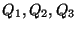. The first quartile 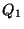 is defined as that measurement located so that 25% of the data is less than or equal to it. The second quartile 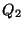 is the same as the median. The third quartile 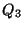 is the measurement located so that 75% of the data is less than or equal to it.
EXAMPLE
A demographic survey in a certain state indicates the the first and third quartiles in height for adult women are 62 inches and 67 inches respectively. This indicates that 25% of the adult women in this state are 62 inches or less while 75% are 67 inches or less.
The median used the 50% point to define it while the quartiles used 25% pieces, but any fraction
or percent could be used to define a fractile. Two common fractiles that are employed are the
deciles which divide the data into 10% chunks and the percentiles which divide the
data into 1% pieces. In the former case there are nine deciles
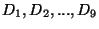. For
example, 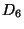 would be the measurement located so that 60% of the data lies less than or equal
to it. The others would be defined analagously. 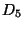 would coincide with the median. For the
percentiles there are 99 such measurements denoted
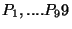. The 86th percentile, 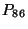
would be located so that 86% of the data is less than or equal to it. It should be noted that
 is the same as the first quartile and 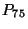 is the same as the third quartile.
is the same as the first quartile and 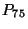 is the same as the third quartile.
EXAMPLE
In the same study cited in the previous example it was found that the 95th percentile in height
was 70 inches. This would indicate that 95% of the adult women were 70 inches or less.
Equivalently only 5% were above this height.